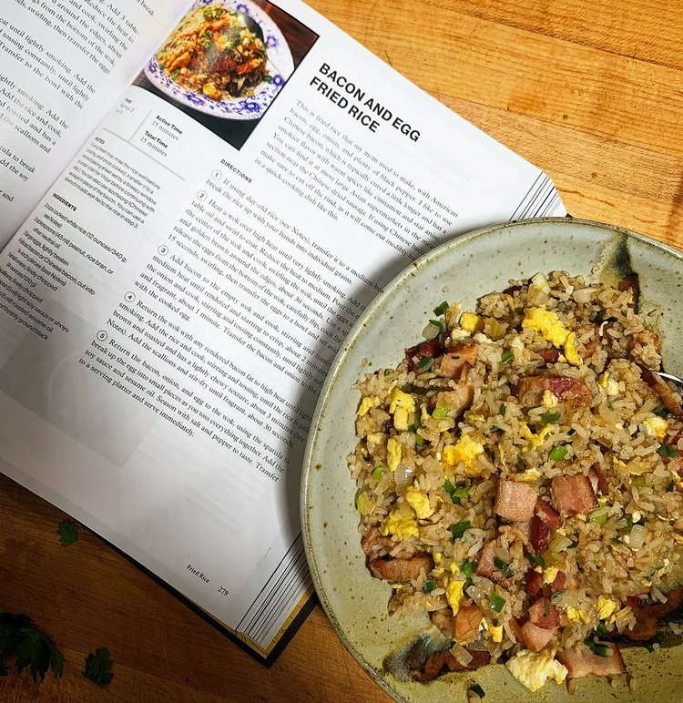

Home
Bacon and Egg Fried Rice
J. Kenji Lopez-Alt

Description
This is fried rice that my mom used to make, with American bacon, egg, onion, and plenty of black pepper.
I like to use Chinese bacon, which is typically cured a little longer and has a smokier flavor with
warm spices like cinnamon and star anise. You can find it at most large Asian supermarkets in the meat
section near the Chinese dried sausage. If using Chinese bacon, make sure to cut off the rind as it
will come out inedibly tough in a quick-cooking dish like this.
Ingredients
- 2 cups cooked white rice
- 3 tablespoons (45 ml) peanut, rice bran, or other neutral oil
- 2 large eggs, lightly beaten
- 4 slices bacon or Chinese bacon, cut into 1/4-inch pieces
- 1 small onion, finely chopped (4 oz/120 g)
- 2 scallions, finely chopped
- 1 teaspoon (5 ml) light soy sauce or shoyu
- 1 teaspoon (5 ml) roasted sesame oil
- Kosher salt and freshly ground black pepper
Steps
- If using day-old rice, transfer it to a medium bowl and break up the rice with your hands into
individual grains.
- Heat a wok over high eat until very lightly smoking. Add the vegetable oil and swirl to coat.
Reduce the heat to medium. Pour the eggs into the center of the wok and cook, swirling the wok,
until the eggs are puffy and golden brown around the edges, about 30 seconds. Use a spatula to
release the eggs from the bottom of the wok, carefully flip, cook for another 15 seconds,
swirling, then transfer the eggs to a bowl and set aside.
-
Add bacon to the empty wok and cook, stirring and tossing over medium heat until rendered and
starting to crisp, about 2 minutes. Add the onion and cook, stirring and tossing constantly,
until lightly softened and fragrant, about 1 minute. Transfer the bacon and onion to the bowl
with the cooked egg.
- Return the wok with any rendered bacon fat to high heat until lightly smoking. Add the rice
and cook, stirring and tossing, until the rice is pale brown and toasted and has a lightly chewy
texture, about 3 minutes. Add the scallions and stir-fry until fragrant, about 30 seconds.
- Return the bacon, onion, and egg to the wok, using the spatula to break up the egg into small
pieces as you toss everything together. Add the soy sauce and sesame oil. Season with salt and
pepper to taste. Transfer to a serving platter and serve immediately.